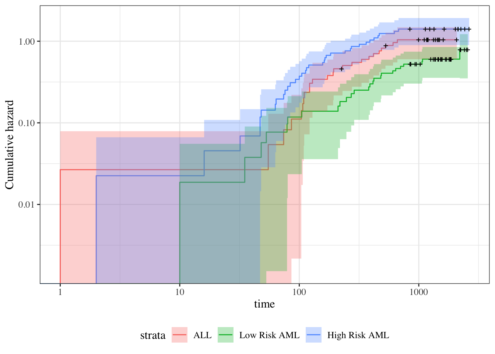

Let’s make two generalizations. First, we let the hazard depend on some covariates \(x_1,x_2, \dots, x_p\); we will indicate this dependence by extending our notation for hazard:
The baseline hazard, base hazard, or reference hazard, denoted \(h_0(t)\) or \(\lambda_0(t)\), is the hazard function for the subpopulation of individuals whose covariates are all equal to their reference levels:
The baseline cumulative hazard, base cumulative hazard, or reference cumulative hazard, denoted \(h_0(t)\) or \(\lambda_0(t)\), is the cumulative hazard function for the subpopulation of individuals whose covariates are all equal to their reference levels:
Definition 6.3 (Baseline survival function) The baseline survival function is the survival function for an individual whose covariates are all equal to their default values.
As the second generalization, we let the base hazard, cumulative hazard, and survival functions depend on \(t\), but not on the covariates (for now). We can do this using either parametric or semi-parametric approaches.
6.2 Cox’s Proportional Hazards Model
The generalization is that the hazard function is:
This model is semi-parametric, because the linear predictor depends on estimated parameters but the base hazard function is unspecified. There is no constant term in \(\eta(x)\), because it is absorbed in the base hazard.
Alternatively, we could define \(\beta_0(t) = \text{log}\left\{h_0(t)\right\}\), and then:
For two different individuals with covariate patterns \(\boldsymbol x_1\) and \(\boldsymbol x_2\), the ratio of the hazard functions (a.k.a. hazard ratio, a.k.a. relative hazard) is:
Under the proportional hazards model, this ratio (a.k.a. proportion) does not depend on \(t\). This property is a structural limitation of the model; it is called the proportional hazards assumption.
Definition 6.4 (proportional hazards) A conditional probability distribution \(p(T|X)\) has proportional hazards if the hazard ratio \(h(t|\boldsymbol x_1)/h(t|\boldsymbol x_2)\) does not depend on \(t\). Mathematically, it can be written as:
As we saw above, Cox’s proportional hazards model has this property, with \(\theta(\boldsymbol x_1,\boldsymbol x_2) = \frac{\theta(\boldsymbol x_1)}{\theta(\boldsymbol x_2)}\).
Note
We are using two similar notations, \(\theta(\boldsymbol x_1,\boldsymbol x_2)\) and \(\theta(\boldsymbol x)\). We can link these notations if we define \(\theta(\boldsymbol x) \stackrel{\text{def}}{=}\theta(\boldsymbol x, \boldsymbol 0)\) and \(\theta(\boldsymbol 0) = 1\).
The proportional hazards model also has additional notable properties:
That is, under Cox’s model \(h(t|\boldsymbol x) = h_0(t)\text{exp}\left\{\boldsymbol x'\beta\right\}\), the log of the hazard ratio is proportional to the difference in \(x_j\), with the proportionality coefficient equal to \(\beta_j\).
That is, the covariate effects are additive on the log-hazard scale; hazard functions for different covariate patterns should be vertical shifts of each other.
6.2.1 Additional properties of the proportional hazards model
If \(h(t|x)= h_0(t)\theta(x)\), then:
Theorem 6.1 (Cumulative hazards are also proportional to \(H_0(t)\))\[
\begin{aligned}
H(t|x)
&\stackrel{\text{def}}{=}\int_{u=0}^t h(u)du\\
&= \int_{u=0}^t h_0(u)\theta(x)du\\
&= \theta(x)\int_{u=0}^t h_0(u)du\\
&= \theta(x)H_0(t)
\end{aligned}
\]
where \(H_0(t) \stackrel{\text{def}}{=}H(t|0) = \int_{u=0}^t h_0(u)du\).
Theorem 6.2 (The logarithms of cumulative hazard should be parallel)\[
\text{log}\left\{H(t|\tilde{x})\right\} =\text{log}\left\{H_0(t)\right\} + \tilde{x}'\tilde{\beta}
\]
The Nelson-Aalen estimate of the cumulative hazard is usually used for estimates of the hazard and often the cumulative hazard.
If the hazards of the three groups are proportional, that means that the ratio of the hazards is constant over \(t\). We can test this using the ratios of the estimated cumulative hazards, which also would be proportional, as shown above.
Show R code
library(KMsurv)library(survival)library(dplyr)data(bmt)bmt=bmt|>as_tibble()|>mutate( group =group|>factor( labels =c("ALL","Low Risk AML","High Risk AML")))nafit=survfit( formula =Surv(t2,d3)~group, type ="fleming-harrington", data =bmt)bmt_curves=tibble(timevec =1:1000)sf1<-with(nafit[1], stepfun(time,c(1,surv)))sf2<-with(nafit[2], stepfun(time,c(1,surv)))sf3<-with(nafit[3], stepfun(time,c(1,surv)))bmt_curves=bmt_curves|>mutate( cumhaz1 =-log(sf1(timevec)), cumhaz2 =-log(sf2(timevec)), cumhaz3 =-log(sf3(timevec)))
Show R code
library(ggplot2)bmt_rel_hazard_plot=bmt_curves|>ggplot(aes( x =timevec, y =cumhaz1/cumhaz2))+geom_line(aes(col ="ALL/Low Risk AML"))+ylab("Hazard Ratio")+xlab("Time")+ylim(0,6)+geom_line(aes(y =cumhaz3/cumhaz1, col ="High Risk AML/ALL"))+geom_line(aes(y =cumhaz3/cumhaz2, col ="High Risk AML/Low Risk AML"))+theme_bw()+labs(colour ="Comparison")+theme(legend.position="bottom")print(bmt_rel_hazard_plot)
Figure 6.1: Hazard Ratios by Disease Group for bmt data
We can zoom in on 30-300 days to take a closer look:
Figure 6.4: Disease-Free Cumulative Hazard by Disease Group (log-scale)

6.2.3 Smoothed hazard functions
The Nelson-Aalen estimate of the cumulative hazard is usually used for estimates of the hazard. Since the hazard is the derivative of the cumulative hazard, we need a smooth estimate of the cumulative hazard, which is provided by smoothing the step-function cumulative hazard.
The R package muhaz handles this for us. What we are looking for is whether the hazard function is more or less the same shape, increasing, decreasing, constant, etc. Are the hazards “proportional”?
Group 3 was plotted first because it has the highest hazard.
Except for an initial blip in the high risk AML group, the hazards look roughly proportional. They are all strongly decreasing.
6.2.4 Fitting the Proportional Hazards Model
How do we fit a proportional hazards regression model? We need to estimate the coefficients of the covariates, and we need to estimate the base hazard \(h_0(t)\). For the covariates, supposing for simplicity that there are no tied event times, let the event times for the whole data set be \(t_1, t_2,\ldots,t_D\). Let the risk set at time \(t_i\) be \(R(t_i)\) and
The logic behind this has several steps. We first fix (ex post) the failure times and note that in this discrete context, the probability \(p_j\) that a subject \(j\) in the risk set fails at time \(t\) is just the hazard of that subject at that time.
If all of the \(p_j\) are small, the chance that exactly one subject fails is
and we can numerically maximize this with respect to the coefficients \(\boldsymbol{\beta}\) that specify \(\eta(\boldsymbol{x}) = \boldsymbol{x}'\boldsymbol{\beta}\). When there are tied event times adjustments need to be made, but the likelihood is still similar. Note that we don’t need to know the base hazard to solve for the coefficients.
Once we have coefficient estimates \(\hat{\boldsymbol{\beta}} =(\hat \beta_1,\ldots,\hat\beta_p)\), this also defines \(\hat\eta(x)\) and \(\hat\theta(x)\) and then the estimated base cumulative hazard function is \[\hat H(t)=
\sum_{t_i < t} \frac{d_i}{\sum_{k\in R(t_i)} \theta(x_k)}\] which reduces to the Nelson-Aalen estimate when there are no covariates. There are numerous other estimates that have been proposed as well.
6.3 Cox Model for the bmt data
6.3.1 Fit the model
Show R code
bmt.cox<-coxph(Surv(t2, d3)~group, data =bmt)summary(bmt.cox)#> Call:#> coxph(formula = Surv(t2, d3) ~ group, data = bmt)#> #> n= 137, number of events= 83 #> #> coef exp(coef) se(coef) z Pr(>|z|) #> groupLow Risk AML -0.574 0.563 0.287 -2.00 0.046 *#> groupHigh Risk AML 0.383 1.467 0.267 1.43 0.152 #> ---#> Signif. codes: 0 '***' 0.001 '**' 0.01 '*' 0.05 '.' 0.1 ' ' 1#> #> exp(coef) exp(-coef) lower .95 upper .95#> groupLow Risk AML 0.563 1.776 0.321 0.989#> groupHigh Risk AML 1.467 0.682 0.869 2.478#> #> Concordance= 0.625 (se = 0.03 )#> Likelihood ratio test= 13.4 on 2 df, p=0.001#> Wald test = 13 on 2 df, p=0.001#> Score (logrank) test = 13.8 on 2 df, p=0.001
The table provides hypothesis tests comparing groups 2 and 3 to group 1. Group 3 has the highest hazard, so the most significant comparison is not directly shown.
The coefficient 0.3834 is on the log-hazard-ratio scale, as in log-risk-ratio. The next column gives the hazard ratio 1.4673, and a hypothesis (Wald) test.
The (not shown) group 3 vs. group 2 log hazard ratio is 0.3834 + 0.5742 = 0.9576. The hazard ratio is then exp(0.9576) or 2.605.
Inference on all coefficients and combinations can be constructed using coef(bmt.cox) and vcov(bmt.cox) as with logistic and poisson regression.
Concordance is agreement of first failure between pairs of subjects and higher predicted risk between those subjects, omitting non-informative pairs.
The Rsquare value is Cox and Snell’s pseudo R-squared and is not very useful.
6.3.2 Tests for nested models
summary() prints three tests for whether the model with the group covariate is better than the one without
Likelihood ratio test (chi-squared)
Wald test (also chi-squared), obtained by adding the squares of the z-scores
Score = log-rank test, as with comparison of survival functions.
The likelihood ratio test is probably best in smaller samples, followed by the Wald test.
6.3.3 Survival Curves from the Cox Model
We can take a look at the resulting group-specific curves:
Show R code
#| fig-cap: "Survival Functions for Three Groups by KM and Cox Model"km_fit=survfit(Surv(t2, d3)~group, data =as.data.frame(bmt))cox_fit=survfit(bmt.cox, newdata =data.frame( group =unique(bmt$group), row.names =unique(bmt$group)))library(survminer)list(KM =km_fit, Cox =cox_fit)|>survminer::ggsurvplot(# facet.by = "group", legend ="bottom", legend.title ="", combine =TRUE, fun ='pct', size =.5, ggtheme =theme_bw(), conf.int =FALSE, censor =FALSE)|>suppressWarnings()# ggsurvplot() throws some warnings that aren't too worrying
When we use survfit() with a Cox model, we have to specify the covariate levels we are interested in; the argument newdata should include a data.frame with the same named columns as the predictors in the Cox model and one or more levels of each.
If the newdata argument is missing, a curve is produced for a single “pseudo” subject with covariate values equal to the means component of the fit. The resulting curve(s) almost never make sense, but the default remains due to an unwarranted attachment to the option shown by some users and by other packages. Two particularly egregious examples are factor variables and interactions. Suppose one were studying interspecies transmission of a virus, and the data set has a factor variable with levels (“pig”, “chicken”) and about equal numbers of observations for each. The “mean” covariate level will be 0.5 – is this a flying pig?
6.3.4 Examining survfit
Show R code
survfit(Surv(t2, d3)~group, data =bmt)#> Call: survfit(formula = Surv(t2, d3) ~ group, data = bmt)#> #> n events median 0.95LCL 0.95UCL#> group=ALL 38 24 418 194 NA#> group=Low Risk AML 54 25 2204 704 NA#> group=High Risk AML 45 34 183 115 456
At each time \(t_i\) at which more than one of the subjects has an event, let \(d_i\) be the number of events at that time, \(D_i\) the set of subjects with events at that time, and let \(s_i\) be a covariate vector for an artificial subject obtained by adding up the covariate values for the subjects with an event at time \(t_i\). Let \[\bar\eta_i = \beta_1s_{i1}+\cdots+\beta_ps_{ip}\] and \(\bar\theta_i = \text{exp}\left\{\bar\eta_i\right\}\).
Let \(s_i\) be a covariate vector for an artificial subject obtained by adding up the covariate values for the subjects with an event at time \(t_i\). Note that
This method is equivalent to treating each event as distinct and using the non-ties formula. It works best when the number of ties is small. It is the default in many statistical packages, including PROC PHREG in SAS.
Efron’s method for ties
The other common method is Efron’s, which is the default in R.
\[L(\beta|T)=
\prod_i \frac{\bar\theta_i}{\prod_{j=1}^{d_i}[\sum_{k \in R(t_i)} \theta_k-\frac{j-1}{d_i}\sum_{k \in D_i} \theta_k]}\] This is closer to the exact discrete partial likelihood when there are many ties.
The third option in R (and an option also in SAS as discrete) is the “exact” method, which is the same one used for matched logistic regression.
Example: Breslow’s method
Suppose as an example we have a time \(t\) where there are 20 individuals at risk and three failures. Let the three individuals have risk parameters \(\theta_1, \theta_2, \theta_3\) and let the sum of the risk parameters of the remaining 17 individuals be \(\theta_R\). Then the factor in the partial likelihood at time \(t\) using Breslow’s method is
as the risk set got smaller with each failure. The exact method roughly averages the results for the six possible orderings of the failures.
Example: Efron’s method
But we don’t know the order they failed in, so instead of reducing the denominator by one risk coefficient each time, we reduce it by the same fraction. This is Efron’s method.
6.6 Diagnostic graphs for proportional hazards assumption
6.6.1 Analysis plan
survival function for the four combinations of disease type and graft type.
observed (nonparametric) vs. expected (semiparametric) survival functions.
complementary log-log survival for the four groups.
6.6.2 Kaplan-Meier survival functions
Show R code
km_model=survfit( formula =surv~dtype+gtype, data =hodg2)km_model|>autoplot(conf.int =FALSE)+theme_bw()+theme( legend.position="bottom", legend.title =element_blank(), legend.text =element_text(size =legend_text_size))+guides(col=guide_legend(ncol=2))+ylab('Survival probability, S(t)')+xlab("Time since transplant (days)")
Kaplan-Meier Survival Curves for HOD/NHL and Allo/Auto Grafts
6.6.3 Observed and expected survival curves
Show R code
# we need to create a tibble of covariate patterns;# we will set score and wtime to mean values for disease and graft types:means=hodg2|>summarize( .by =c(dtype, gtype), score =mean(score), wtime =mean(wtime))|>arrange(dtype, gtype)|>mutate(strata =paste(dtype, gtype, sep =","))|>as.data.frame()# survfit.coxph() will use the rownames of its `newdata`# argument to label its output:rownames(means)=means$stratacox_model=hodg.cox1|>survfit( data =hodg2, # ggsurvplot() will need this newdata =means)
Show R code
# I couldn't find a good function to reformat `cox_model` for ggplot, # so I made my own:stack_surv_ph=function(cox_model){cox_model$surv|>as_tibble()|>mutate(time =cox_model$time)|>pivot_longer( cols =-time, names_to ="strata", values_to ="surv")|>mutate( cumhaz =-log(surv), model ="Cox PH")}km_and_cph=km_model|>fortify(surv.connect =TRUE)|>mutate( strata =trimws(strata), model ="Kaplan-Meier", cumhaz =-log(surv))|>bind_rows(stack_surv_ph(cox_model))
na_and_cph=na_model|>fortify(fun ="cumhaz")|># `fortify.survfit()` doesn't name cumhaz correctly:rename(cumhaz =surv)|>mutate( surv =exp(-cumhaz), strata =trimws(strata))|>mutate(model ="Nelson-Aalen")|>bind_rows(stack_surv_ph(cox_model))na_and_cph|>ggplot(aes( x =time, y =cumhaz, col =model))+geom_step()+facet_wrap(~strata)+theme_bw()+scale_y_continuous( trans ="log10", name ="Cumulative hazard H(t) (log-scale)")+scale_x_continuous( trans ="log10", name ="Survival time (t, days, log-scale)")+theme(legend.position ="bottom")
Figure 6.7: Observed and expected cumulative hazard curves for bmt data (cloglog format)
6.7 Predictions and Residuals
6.7.1 Review: Predictions in Linear Regression
In linear regression, we have a linear predictor for each data point \(i\)
\(\hat y_i\) estimates the conditional mean of \(y_i\) given the covariate values \(\tilde{x}_i\). This together with the prediction error says that we are predicting the distribution of values of \(y\).
6.7.2 Review: Residuals in Linear Regression
The usual residual is \(r_i=y_i-\hat y_i\), the difference between the actual value of \(y\) and a prediction of its mean.
The residuals are also the quantities the sum of whose squares is being minimized by the least squares/MLE estimation.
6.7.3 Predictions and Residuals in survival models
In survival analysis, the equivalent of \(y_i\) is the event time \(t_i\), which is unknown for the censored observations.
The expected event time can be tricky to calculate:
The nature of time-to-event data results in very wide prediction intervals:
Suppose a cancer patient is predicted to have a mean lifetime of 5 years after diagnosis and suppose the distribution is exponential.
If we want a 95% interval for survival, the lower end is at the 0.025 percentage point of the exponential which is qexp(.025, rate = 1/5) = 0.1266 years, or 1/40 of the mean lifetime.
The upper end is at the 0.975 point which is qexp(.975, rate = 1/5) = 18.4444 years, or 3.7 times the mean lifetime.
Saying that the survival time is somewhere between 6 weeks and 18 years does not seem very useful, but it may be the best we can do.
For survival analysis, something is like a residual if it is small when the model is accurate or if the accumulation of them is in some way minimized by the estimation algorithm, but there is no exact equivalence to linear regression residuals.
And if there is, they are mostly quite large!
6.7.5 Types of Residuals in Time-to-Event Models
It is often hard to make a decision from graph appearances, though the process can reveal much.
Some diagnostic tests are based on residuals as with other regression methods:
Schoenfeld residuals (via cox.zph) for proportionality
Cox-Snell residuals for goodness of fit (Section 6.8)
martingale residuals for non-linearity
dfbeta for influence.
6.7.6 Schoenfeld residuals
There is a Schoenfeld residual for each subject \(i\) with an event (not censored) and for each predictor \(x_{k}\).
At the event time \(t\) for that subject, there is a risk set \(R\), and each subject \(j\) in the risk set has a risk coefficient \(\theta_j\) and also a value \(x_{jk}\) of the predictor.
The Schoenfeld residual is the difference between \(x_{ik}\) and the risk-weighted average of all the \(x_{jk}\) over the risk set.
This residual measures how typical the individual subject is with respect to the covariate at the time of the event. Since subjects should fail more or less uniformly according to risk, the Schoenfeld residuals should be approximately level over time, not increasing or decreasing.
We can test this with the correlation with time on some scale, which could be the time itself, the log time, or the rank in the set of failure times.
The default is to use the KM curve as a transform, which is similar to the rank but deals better with censoring.
The cox.zph() function implements a score test proposed in Grambsch and Therneau (1994).
From the correlation test, the Karnofsky score and the interaction with graft type disease type induce modest but statistically significant non-proportionality.
The sample size here is relatively small (26 events in 43 subjects). If the sample size is large, very small amounts of non-proportionality can induce a significant result.
As time goes on, autologous grafts are over-represented at their own event times, but those from HOD patients become less represented.
Both the statistical tests and the plots are useful.
6.8 Goodness of Fit using the Cox-Snell Residuals
(references: Klein and Moeschberger (2003), §11.2, and Dobson and Barnett (2018), §10.6)
Suppose that an individual has a survival time \(T\) which has survival function \(S(t)\), meaning that \(\Pr(T> t) = S(t)\). Then \(S(T)\) has a uniform distribution on \((0,1)\):
If the estimate \(\hat S_i\) is accurate, \(r^{CS}_i\) should have an exponential distribution with constant hazard \(\lambda=1\), which means that these values should look like a censored sample from this exponential distribution.
Show R code
hodg2=hodg2|>mutate(cs =predict(hodg.cox1, type ="expected"))surv.csr=survfit( data =hodg2, formula =Surv(time =cs, event =delta=="dead")~1, type ="fleming-harrington")autoplot(surv.csr, fun ="cumhaz")+geom_abline(aes(intercept =0, slope =1), col ="red")+theme_bw()
Cumulative Hazard of Cox-Snell Residuals
The line with slope 1 and intercept 0 fits the curve relatively well, so we don’t see lack of fit using this procedure.
6.9 Martingale Residuals
The martingale residuals are a slight modification of the Cox-Snell residuals. If the censoring indicator is \(\delta_i\), then \[r^M_i=\delta_i-r^{CS}_i\] These residuals can be interpreted as an estimate of the excess number of events seen in the data but not predicted by the model. We will use these to examine the functional forms of continuous covariates.
6.9.1 Using Martingale Residuals
Martingale residuals can be used to examine the functional form of a numeric variable.
We fit the model without that variable and compute the martingale residuals.
We then plot these martingale residuals against the values of the variable.
We can see curvature, or a possible suggestion that the variable can be discretized.
Let’s use this to examine the score and wtime variables in the wtime data set.
Model summary table with dichotomized waiting time
The new model has better (lower) AIC.
6.10 Checking for Outliers and Influential Observations
We will check for outliers using the deviance residuals. The martingale residuals show excess events or the opposite, but highly skewed, with the maximum possible value being 1, but the smallest value can be very large negative. Martingale residuals can detect unexpectedly long-lived patients, but patients who die unexpectedly early show up only in the deviance residual. Influence will be examined using dfbeta in a similar way to linear regression, logistic regression, or Poisson regression.
The two largest deviance residuals are observations 1 and 29. Worth examining.
6.10.3 dfbeta
dfbeta is the approximate change in the coefficient vector if that observation were dropped
dfbetas is the approximate change in the coefficients, scaled by the standard error for the coefficients.
Graft type
Show R code
plot(hodg.dfb[,1],xlab="Observation Order",ylab="dfbeta for Graft Type")
dfbeta Values by Observation Order for Graft Type
The smallest dfbeta for graft type is observation 1.
Disease type
Show R code
plot(hodg.dfb[,2], xlab="Observation Order", ylab="dfbeta for Disease Type")
dfbeta Values by Observation Order for Disease Type
The smallest two dfbeta values for disease type are observations 1 and 16.
Karnofsky score
Show R code
plot(hodg.dfb[,3], xlab="Observation Order", ylab="dfbeta for Karnofsky Score")
dfbeta Values by Observation Order for Karnofsky Score
The two highest dfbeta values for score are observations 1 and 18. The next three are observations 17, 29, and 19. The smallest value is observation 2.
Waiting time (dichotomized)
Show R code
plot(hodg.dfb[,4], xlab="Observation Order", ylab="dfbeta for `Waiting Time < 80`")
dfbeta Values by Observation Order for Waiting Time (dichotomized)
The two large values of dfbeta for dichotomized waiting time are observations 15 and 16. This may have to do with the discretization of waiting time.
Interaction: graft type and disease type
Show R code
plot(hodg.dfb[,5], xlab="Observation Order", ylab="dfbeta for dtype:gtype")
dfbeta Values by Observation Order for dtype:gtype
The two largest values are observations 1 and 16. The smallest value is observation 35.
Table 6.1: Observations to Examine by Residuals and Influence
Diagnostic
Observations to Examine
Martingale Residuals
1, 29, 18
Deviance Residuals
1, 29
Graft Type Influence
1
Disease Type Influence
1, 16
Karnofsky Score Influence
1, 18 (17, 29, 19)
Waiting Time Influence
15, 16
Graft by Disease Influence
1, 16, 35
The most important observations to examine seem to be 1, 15, 16, 18, and 29.
6.10.4
Show R code
with(hodg,summary(time[delta==1]))#> Min. 1st Qu. Median Mean 3rd Qu. Max. #> 2.0 41.2 62.5 97.6 83.2 524.0
Show R code
with(hodg,summary(wtime))#> Min. 1st Qu. Median Mean 3rd Qu. Max. #> 5.0 16.0 24.0 37.7 55.5 171.0
Show R code
with(hodg,summary(score))#> Min. 1st Qu. Median Mean 3rd Qu. Max. #> 20.0 60.0 80.0 76.3 90.0 100.0
hodg2[c(1,15,16,18,29),]|>select(gtype, dtype, time, delta, score, wtime)|>mutate( comment =c("early death, good score, low risk","high risk grp, long wait, poor score","high risk grp, short wait, poor score","early death, good score, med risk grp","early death, good score, med risk grp"))
6.10.5 Action Items
Unusual points may need checking, particularly if the data are not completely cleaned. In this case, observations 15 and 16 may show some trouble with the dichotomization of waiting time, but it still may be useful.
The two largest residuals seem to be due to unexpectedly early deaths, but unfortunately this can occur.
If hazards don’t look proportional, then we may need to use strata, between which the base hazards are permitted to be different. For this problem, the natural strata are the two diseases, because they could need to be managed differently anyway.
A main point that we want to be sure of is the relative risk difference by disease type and graft type.
For Non-Hodgkin’s, the allogenic graft is better. For Hodgkin’s, the autologous graft is much better.
6.11 Stratified survival models
6.11.1 Revisiting the leukemia dataset (anderson)
We will analyze remission survival times on 42 leukemia patients, half on new treatment, half on standard treatment.
This is the same data as the drug6mp data from KMsurv, but with two other variables and without the pairing. This version comes from Kleinbaum and Klein (2012) (e.g., p281):
Show R code
anderson=paste0("http://web1.sph.emory.edu/dkleinb/allDatasets/","surv2datasets/anderson.dta")|>haven::read_dta()|>mutate( status =status|>case_match(1~"relapse",0~"censored"), sex =sex|>case_match(0~"female",1~"male")|>factor()|>relevel(ref ="female"), rx =rx|>case_match(0~"new",1~"standard")|>factor()|>relevel(ref ="standard"), surv =Surv( time =survt, event =(status=="relapse")))print(anderson)
6.11.2 Cox semi-parametric proportional hazards model
Show R code
anderson.cox1=coxph( formula =surv~rx+sex+logwbc, data =anderson)summary(anderson.cox1)#> Call:#> coxph(formula = surv ~ rx + sex + logwbc, data = anderson)#> #> n= 42, number of events= 30 #> #> coef exp(coef) se(coef) z Pr(>|z|) #> rxnew -1.504 0.222 0.462 -3.26 0.0011 ** #> sexmale 0.315 1.370 0.455 0.69 0.4887 #> logwbc 1.682 5.376 0.337 5.00 5.8e-07 ***#> ---#> Signif. codes: 0 '***' 0.001 '**' 0.01 '*' 0.05 '.' 0.1 ' ' 1#> #> exp(coef) exp(-coef) lower .95 upper .95#> rxnew 0.222 4.498 0.090 0.549#> sexmale 1.370 0.730 0.562 3.338#> logwbc 5.376 0.186 2.779 10.398#> #> Concordance= 0.851 (se = 0.041 )#> Likelihood ratio test= 47.2 on 3 df, p=3e-10#> Wald test = 33.5 on 3 df, p=2e-07#> Score (logrank) test = 48 on 3 df, p=2e-10
Test the proportional hazards assumption
Show R code
cox.zph(anderson.cox1)#> chisq df p#> rx 0.036 1 0.85#> sex 5.420 1 0.02#> logwbc 0.142 1 0.71#> GLOBAL 5.879 3 0.12
Graph the K-M survival curves
Show R code
anderson_km_model=survfit( formula =surv~sex, data =anderson)anderson_km_model|>autoplot(conf.int =FALSE)+theme_bw()+theme(legend.position="bottom")
The survival curves cross, which indicates a problem in the proportionality assumption by sex.
6.11.3 Graph the Nelson-Aalen cumulative hazard
We can also look at the log-hazard (“cloglog survival”) plots:
Show R code
anderson_na_model=survfit( formula =surv~sex, data =anderson, type ="fleming")anderson_na_model|>autoplot( fun ="cumhaz", conf.int =FALSE)+theme_classic()+theme(legend.position="bottom")+ylab("log(Cumulative Hazard)")+scale_y_continuous( trans ="log10", name ="Cumulative hazard (H(t), log scale)")+scale_x_continuous( breaks =c(1,2,5,10,20,50), trans ="log")
Cumulative hazard (cloglog scale) for anderson data
This can be fixed by using strata or possibly by other model alterations.
6.11.4 The Stratified Cox Model
In a stratified Cox model, each stratum, defined by one or more factors, has its own base survival function \(h_0(t)\).
But the coefficients for each variable not used in the strata definitions are assumed to be the same across strata.
To check if this assumption is reasonable one can include interactions with strata and see if they are significant (this may generate a warning and NA lines but these can be ignored).
Since the sex variable shows possible non-proportionality, we try stratifying on sex.
Show R code
anderson.coxph.strat=coxph( formula =surv~rx+logwbc+strata(sex), data =anderson)summary(anderson.coxph.strat)#> Call:#> coxph(formula = surv ~ rx + logwbc + strata(sex), data = anderson)#> #> n= 42, number of events= 30 #> #> coef exp(coef) se(coef) z Pr(>|z|) #> rxnew -0.998 0.369 0.474 -2.11 0.035 * #> logwbc 1.454 4.279 0.344 4.22 2.4e-05 ***#> ---#> Signif. codes: 0 '***' 0.001 '**' 0.01 '*' 0.05 '.' 0.1 ' ' 1#> #> exp(coef) exp(-coef) lower .95 upper .95#> rxnew 0.369 2.713 0.146 0.932#> logwbc 4.279 0.234 2.180 8.398#> #> Concordance= 0.812 (se = 0.059 )#> Likelihood ratio test= 32.1 on 2 df, p=1e-07#> Wald test = 22.8 on 2 df, p=1e-05#> Score (logrank) test = 30.8 on 2 df, p=2e-07
Let’s compare this to a model fit only on the subset of males:
Show R code
anderson.coxph.male=coxph( formula =surv~rx+logwbc, subset =sex=="male", data =anderson)summary(anderson.coxph.male)#> Call:#> coxph(formula = surv ~ rx + logwbc, data = anderson, subset = sex == #> "male")#> #> n= 20, number of events= 14 #> #> coef exp(coef) se(coef) z Pr(>|z|) #> rxnew -1.978 0.138 0.739 -2.68 0.0075 **#> logwbc 1.743 5.713 0.536 3.25 0.0011 **#> ---#> Signif. codes: 0 '***' 0.001 '**' 0.01 '*' 0.05 '.' 0.1 ' ' 1#> #> exp(coef) exp(-coef) lower .95 upper .95#> rxnew 0.138 7.227 0.0325 0.589#> logwbc 5.713 0.175 1.9991 16.328#> #> Concordance= 0.905 (se = 0.043 )#> Likelihood ratio test= 29.2 on 2 df, p=5e-07#> Wald test = 15.3 on 2 df, p=5e-04#> Score (logrank) test = 26.4 on 2 df, p=2e-06
Show R code
anderson.coxph.female=coxph( formula =surv~rx+logwbc, subset =sex=="female", data =anderson)summary(anderson.coxph.female)#> Call:#> coxph(formula = surv ~ rx + logwbc, data = anderson, subset = sex == #> "female")#> #> n= 22, number of events= 16 #> #> coef exp(coef) se(coef) z Pr(>|z|) #> rxnew -0.311 0.733 0.564 -0.55 0.581 #> logwbc 1.206 3.341 0.503 2.40 0.017 *#> ---#> Signif. codes: 0 '***' 0.001 '**' 0.01 '*' 0.05 '.' 0.1 ' ' 1#> #> exp(coef) exp(-coef) lower .95 upper .95#> rxnew 0.733 1.365 0.243 2.21#> logwbc 3.341 0.299 1.245 8.96#> #> Concordance= 0.692 (se = 0.085 )#> Likelihood ratio test= 6.65 on 2 df, p=0.04#> Wald test = 6.36 on 2 df, p=0.04#> Score (logrank) test = 6.74 on 2 df, p=0.03
The coefficients of treatment look different. Are they statistically different?
We don’t have enough evidence to tell the difference between these two models.
6.11.5 Conclusions
We chose to use a stratified model because of the apparent non-proportionality of the hazard for the sex variable.
When we fit interactions with the strata variable, we did not get an improved model (via the likelihood ratio test).
So we use the stratifed model with coefficients that are the same across strata.
6.11.6 Another Modeling Approach
We used an additive model without interactions and saw that we might need to stratify by sex.
Instead, we could try to improve the model’s functional form - maybe the interaction of treatment and sex is real, and after fitting that we might not need separate hazard functions.
This dataset comes from the Copelan et al. (1991) study of allogenic bone marrow transplant therapy for acute myeloid leukemia (AML) and acute lymphoblastic leukemia (ALL).
Outcomes (endpoints)
The main endpoint is disease-free survival (t2 and d3) for the three risk groups, “ALL”, “AML Low Risk”, and “AML High Risk”.
Possible intermediate events
graft vs. host disease (GVHD), an immunological rejection response to the transplant (bad)
acute (AGVHD)
chronic (CGVHD)
platelet recovery, a return of platelet count to normal levels (good)
One or the other, both in either order, or neither may occur.
Covariates
We are interested in possibly using the covariates z1-z10 to adjust for other factors.
In addition, the time-varying covariates for acute GVHD, chronic GVHD, and platelet recovery may be useful.
Preprocessing
We reformat the data before analysis:
Show R code
# reformat the data:bmt1=bmt|>as_tibble()|>mutate( id =1:n(), # will be used to connect multiple records for the same individual group =group|>case_match(1~"ALL",2~"Low Risk AML",3~"High Risk AML")|>factor(levels =c("ALL", "Low Risk AML", "High Risk AML")), `patient age` =z1, `donor age` =z2, `patient sex` =z3|>case_match(0~"Female",1~"Male"), `donor sex` =z4|>case_match(0~"Female",1~"Male"), `Patient CMV Status` =z5|>case_match(0~"CMV Negative",1~"CMV Positive"), `Donor CMV Status` =z6|>case_match(0~"CMV Negative",1~"CMV Positive"), `Waiting Time to Transplant` =z7, FAB =z8|>case_match(1~"Grade 4 Or 5 (AML only)",0~"Other")|>factor()|>relevel(ref ="Other"), hospital =z9|># `z9` is hospitalcase_match(1~"Ohio State University",2~"Alferd",3~"St. Vincent",4~"Hahnemann")|>factor()|>relevel(ref ="Ohio State University"), MTX =(z10==1)# a prophylatic treatment for GVHD)|>select(-(z1:z10))# don't need these anymorebmt1|>select(group, id:MTX)|>print(n =10)#> # A tibble: 137 × 12#> group id `patient age` `donor age` `patient sex` `donor sex`#> <fct> <int> <int> <int> <chr> <chr> #> 1 ALL 1 26 33 Male Female #> 2 ALL 2 21 37 Male Male #> 3 ALL 3 26 35 Male Male #> 4 ALL 4 17 21 Female Male #> 5 ALL 5 32 36 Male Male #> 6 ALL 6 22 31 Male Male #> 7 ALL 7 20 17 Male Female #> 8 ALL 8 22 24 Male Female #> 9 ALL 9 18 21 Female Male #> 10 ALL 10 24 40 Male Male #> # ℹ 127 more rows#> # ℹ 6 more variables: `Patient CMV Status` <chr>, `Donor CMV Status` <chr>,#> # `Waiting Time to Transplant` <int>, FAB <fct>, hospital <fct>, MTX <lgl>
6.12.2 Time-Dependent Covariates
A time-dependent covariate (“TDC”) is a covariate whose value changes during the course of the study.
For variables like age that change in a linear manner with time, we can just use the value at the start.
But it may be plausible that when and if GVHD occurs, the risk of relapse or death increases, and when and if platelet recovery occurs, the risk decreases.
6.12.3 Analysis in R
We form a variable precovery which is = 0 before platelet recovery and is = 1 after platelet recovery, if it occurs.
For each subject where platelet recovery occurs, we set up multiple records (lines in the data frame); for example one from t = 0 to the time of platelet recovery, and one from that time to relapse, recovery, or death.
We do the same for acute GVHD and chronic GVHD.
For each record, the covariates are constant.
Show R code
bmt2=bmt1|>#set up new long-format data set:tmerge(bmt1, id =id, tstop =t2)|># the following three steps can be in any order, # and will still produce the same result:#add aghvd as tdc:tmerge(bmt1, id =id, agvhd =tdc(ta))|>#add cghvd as tdc:tmerge(bmt1, id =id, cgvhd =tdc(tc))|>#add platelet recovery as tdc:tmerge(bmt1, id =id, precovery =tdc(tp))bmt2=bmt2|>as_tibble()|>mutate(status =as.numeric((tstop==t2)&d3))# status only = 1 if at end of t2 and not censored
Let’s see how we’ve rearranged the first row of the data:
Show R code
bmt1|>dplyr::filter(id==1)|>dplyr::select(id, t1, d1, t2, d2, d3, ta, da, tc, dc, tp, dp)
The event times for this individual are:
t = 0 time of transplant
tp = 13 platelet recovery
ta = 67 acute GVHD onset
tc = 121 chronic GVHD onset
t2 = 2081 end of study, patient not relapsed or dead
After converting the data to long-format, we have:
Note that status could have been 1 on the last row, indicating that relapse or death occurred; since it is false, the participant must have exited the study without experiencing relapse or death (i.e., they were censored).
6.12.4 Event sequences
Let:
A = acute GVHD
C = chronic GVHD
P = platelet recovery
Each of the eight possible combinations of A or not-A, with C or not-C, with P or not-P occurs in this data set.
A always occurs before C, and P always occurs before C, if both occur.
Thus there are ten event sequences in the data set: None, A, C, P, AC, AP, PA, PC, APC, and PAC.
In general, there could be as many as \(1+3+(3)(2)+6=16\) sequences, but our domain knowledge tells us that some are missing: CA, CP, CAP, CPA, PCA, PC, PAC
Different subjects could have 1, 2, 3, or 4 intervals, depending on which of acute GVHD, chronic GVHD, and/or platelet recovery occurred.
The final interval for any subject has status = 1 if the subject relapsed or died at that time; otherwise status = 0.
Any earlier intervals have status = 0.
Even though there might be multiple lines per ID in the dataset, there is never more than one event, so no alterations need be made in the estimation procedures or in the interpretation of the output.
The function tmerge in the survival package eases the process of constructing the new long-format dataset.
6.12.5 Model with Time-Fixed Covariates
Show R code
bmt1=bmt1|>mutate(surv =Surv(t2,d3))bmt_coxph_TF=coxph( formula =surv~group+`patient age`*`donor age`+FAB, data =bmt1)summary(bmt_coxph_TF)#> Call:#> coxph(formula = surv ~ group + `patient age` * `donor age` + #> FAB, data = bmt1)#> #> n= 137, number of events= 83 #> #> coef exp(coef) se(coef) z Pr(>|z|) #> groupLow Risk AML -1.090648 0.335999 0.354279 -3.08 0.00208 ** #> groupHigh Risk AML -0.403905 0.667707 0.362777 -1.11 0.26555 #> `patient age` -0.081639 0.921605 0.036107 -2.26 0.02376 * #> `donor age` -0.084587 0.918892 0.030097 -2.81 0.00495 ** #> FABGrade 4 Or 5 (AML only) 0.837416 2.310388 0.278464 3.01 0.00264 ** #> `patient age`:`donor age` 0.003159 1.003164 0.000951 3.32 0.00089 ***#> ---#> Signif. codes: 0 '***' 0.001 '**' 0.01 '*' 0.05 '.' 0.1 ' ' 1#> #> exp(coef) exp(-coef) lower .95 upper .95#> groupLow Risk AML 0.336 2.976 0.168 0.673#> groupHigh Risk AML 0.668 1.498 0.328 1.360#> `patient age` 0.922 1.085 0.859 0.989#> `donor age` 0.919 1.088 0.866 0.975#> FABGrade 4 Or 5 (AML only) 2.310 0.433 1.339 3.988#> `patient age`:`donor age` 1.003 0.997 1.001 1.005#> #> Concordance= 0.665 (se = 0.033 )#> Likelihood ratio test= 32.8 on 6 df, p=1e-05#> Wald test = 33 on 6 df, p=1e-05#> Score (logrank) test = 35.8 on 6 df, p=3e-06drop1(bmt_coxph_TF, test ="Chisq")
Neither acute GVHD (agvhd) nor chronic GVHD (cgvhd) has a statistically significant effect here, nor are they significant in models with the other one removed.
Sometimes an appropriate analysis requires consideration of recurrent events.
A patient with arthritis may have more than one flareup. The same is true of many recurring-remitting diseases.
In this case, we have more than one line in the data frame, but each line may have an event.
We have to use a “robust” variance estimator to account for correlation of time-to-events within a patient.
6.13.1 Bladder Cancer Data Set
The bladder cancer dataset from Kleinbaum and Klein (2012) contains recurrent event outcome information for eighty-six cancer patients followed for the recurrence of bladder cancer tumor after transurethral surgical excision (Byar and Green 1980). The exposure of interest is the effect of the drug treatment of thiotepa. Control variables are the initial number and initial size of tumors. The data layout is suitable for a counting processes approach.
This drug is still a possible choice for some patients. Another therapeutic choice is Bacillus Calmette-Guerin (BCG), a live bacterium related to cow tuberculosis.
Data dictionary
Variables in the bladder dataset
Variable
Definition
id
Patient unique ID
status
for each time interval: 1 = recurred, 0 = censored
interval
1 = first recurrence, etc.
intime
`tstop - tstart (all times in months)
tstart
start of interval
tstop
end of interval
tx
treatment code, 1 = thiotepa
num
number of initial tumors
size
size of initial tumors (cm)
There are 85 patients and 190 lines in the dataset, meaning that many patients have more than one line.
Patient 1 with 0 observation time was removed.
Of the 85 patients, 47 had at least one recurrence and 38 had none.
18 patients had exactly one recurrence.
There were up to 4 recurrences in a patient.
Of the 190 intervals, 112 terminated with a recurrence and 78 were censored.
Different intervals for the same patient are correlated.
Is the effective sample size 47 or 112? This might narrow confidence intervals by as much as a factor of \(\sqrt{112/47}=1.54\)
What happens if I have 5 treatment and 5 control values and want to do a t-test and I then duplicate the 10 values as if the sample size was 20? This falsely narrows confidence intervals by a factor of \(\sqrt{2}=1.41\).
Show R code
bladder=paste0("http://web1.sph.emory.edu/dkleinb/allDatasets","/surv2datasets/bladder.dta")|>read_dta()|>as_tibble()bladder=bladder[-1,]#remove subject with 0 observation timeprint(bladder)
Show R code
bladder=bladder|>mutate( surv =Surv( time =start, time2 =stop, event =event, type ="counting"))bladder.cox1=coxph( formula =surv~tx+num+size, data =bladder)#results with biased variance-covariance matrix:summary(bladder.cox1)#> Call:#> coxph(formula = surv ~ tx + num + size, data = bladder)#> #> n= 190, number of events= 112 #> #> coef exp(coef) se(coef) z Pr(>|z|) #> tx -0.4116 0.6626 0.1999 -2.06 0.03947 * #> num 0.1637 1.1778 0.0478 3.43 0.00061 ***#> size -0.0411 0.9598 0.0703 -0.58 0.55897 #> ---#> Signif. codes: 0 '***' 0.001 '**' 0.01 '*' 0.05 '.' 0.1 ' ' 1#> #> exp(coef) exp(-coef) lower .95 upper .95#> tx 0.663 1.509 0.448 0.98#> num 1.178 0.849 1.073 1.29#> size 0.960 1.042 0.836 1.10#> #> Concordance= 0.624 (se = 0.032 )#> Likelihood ratio test= 14.7 on 3 df, p=0.002#> Wald test = 15.9 on 3 df, p=0.001#> Score (logrank) test = 16.2 on 3 df, p=0.001
Note
The likelihood ratio and score tests assume independence of observations within a cluster. The Wald and robust score tests do not.
adding cluster = id
If we add cluster= id to the call to coxph, the coefficient estimates don’t change, but we get an additional column in the summary() output: robust se:
Show R code
bladder.cox2=coxph( formula =surv~tx+num+size, cluster =id, data =bladder)#unbiased though this reduces power:summary(bladder.cox2)#> Call:#> coxph(formula = surv ~ tx + num + size, data = bladder, cluster = id)#> #> n= 190, number of events= 112 #> #> coef exp(coef) se(coef) robust se z Pr(>|z|) #> tx -0.4116 0.6626 0.1999 0.2488 -1.65 0.0980 . #> num 0.1637 1.1778 0.0478 0.0584 2.80 0.0051 **#> size -0.0411 0.9598 0.0703 0.0742 -0.55 0.5799 #> ---#> Signif. codes: 0 '***' 0.001 '**' 0.01 '*' 0.05 '.' 0.1 ' ' 1#> #> exp(coef) exp(-coef) lower .95 upper .95#> tx 0.663 1.509 0.407 1.08#> num 1.178 0.849 1.050 1.32#> size 0.960 1.042 0.830 1.11#> #> Concordance= 0.624 (se = 0.031 )#> Likelihood ratio test= 14.7 on 3 df, p=0.002#> Wald test = 11.2 on 3 df, p=0.01#> Score (logrank) test = 16.2 on 3 df, p=0.001, Robust = 10.8 p=0.01#> #> (Note: the likelihood ratio and score tests assume independence of#> observations within a cluster, the Wald and robust score tests do not).
robust se is larger than se, and accounts for the repeated observations from the same individuals:
Copelan, Edward A, James C Biggs, James M Thompson, Pamela Crilley, Jeff Szer, John P Klein, Neena Kapoor, Belinda R Avalos, Isabel Cunningham, and Kerry Atkinson. 1991. “Treatment for Acute Myelocytic Leukemia with Allogeneic Bone Marrow Transplantation Following Preparation with BuCy2.”https://doi.org/10.1182/blood.V78.3.838.838.
Dobson, Annette J, and Adrian G Barnett. 2018. An Introduction to Generalized Linear Models. 4th ed. CRC press. https://doi.org/10.1201/9781315182780.
Grambsch, Patricia M, and Terry M Therneau. 1994. “Proportional Hazards Tests and Diagnostics Based on Weighted Residuals.”Biometrika 81 (3): 515–26. https://doi.org/10.1093/biomet/81.3.515.
# Proportional Hazards Models---{{< include shared-config.qmd >}}## Introduction---::: notesRecall: the exponential distribution has constant hazard::::$$\begin{aligned}f(t) &= \lambda e^{-\lambda t}\\S(t) &= e^{-\lambda t}\\h(t) &= \lambda\end{aligned}$$---::: notesLet's make two generalizations. First, we let the hazard depend on somecovariates $x_1,x_2, \dots, x_p$; we will indicate this dependence by extending our notation for hazard::::$$\haz(t|\vx) \eqdef \p(T=t|T\ge t, \vX = \vx)$$---:::{#def-base-hazard}#### baseline hazard:::: notesThe **baseline hazard**, **base hazard**, or **reference hazard**, denoted $h_0(t)$ or $\lambda_0(t)$, is the [hazard function](intro-to-survival-analysis.qmd#def-hazard) for the subpopulation of individuals whose covariates are all equal to their reference levels:::::$$\haz_0(t) \eqdef \haz(t | \vX = \v0)$$:::---Similarly: :::{#def-base-cuhaz}#### baseline cumulative hazard:::: notesThe **baseline cumulative hazard**, **base cumulative hazard**, or **reference cumulative hazard**, denoted $h_0(t)$ or $\lambda_0(t)$, is the [cumulative hazard function](intro-to-survival-analysis.qmd#def-cuhaz)for the subpopulation of individuals whose covariates are all equal to their reference levels:::::$$\cuhaz_0(t) \eqdef \cuhaz(t | \vX = \v0)$$:::---Also::::{#def-baseline-surv}#### Baseline survival functionThe **baseline survival function** is the survival function for an individual whose covariates are all equal to their default values.$$S_0(t) \eqdef S(t | \vX = \v0)$$:::---::: notesAs the second generalization, we let the base hazard, cumulative hazard, and survival functionsdepend on $t$, but not on the covariates (for now). We can do this using either parametric or semi-parametric approaches.:::## Cox's Proportional Hazards Model---::: notesThe generalization is that the hazard function is::::$$\begin{aligned}h(t|x)&= h_0(t)\theta(x)\\\theta(x) &= \exp{\eta(x)}\\\eta(x) &= \vx\'\vb \\&\eqdef \beta_1x_1+\cdots+\beta_px_p\end{aligned}$$::: notesThe relationship between $h(t|x)$ and $\eta(x)$ is typically modeled using a log link, as in a generalized linear model; that is::::$$\log{h(t|x)} = \log{h_0(t)} + \eta(x)$$---::: notesThis model is **semi-parametric**, because the linear predictor depends on estimatedparameters but the base hazard function is unspecified. There is no constant term in $\eta(x)$, because it is absorbed in the base hazard. :::---Alternatively, we could define $\beta_0(t) = \log{h_0(t)}$, and then:$$\eta(x,t) = \beta_0(t) + \beta_1x_1+\cdots+\beta_px_p$$---::: notesFor two different individuals with covariate patterns $\boldsymbol x_1$ and $\boldsymbol x_2$, the ratio of the hazard functions (a.k.a. **hazard ratio**, a.k.a. **relative hazard**) is::::$$\begin{aligned}\frac{h(t|\boldsymbol x_1)}{h(t|\boldsymbol x_2)}&=\frac{h_0(t)\theta(\boldsymbol x_1)}{h_0(t)\theta(\boldsymbol x_2)}\\&=\frac{\theta(\boldsymbol x_1)}{\theta(\boldsymbol x_2)}\\\end{aligned}$$ ::: notesUnder the proportional hazards model, this ratio (a.k.a. proportion) does not depend on $t$. This property is a structural limitation of the model; it is called the **proportional hazards assumption**.:::---::: {#def-pha}### proportional hazardsA conditional probability distribution $p(T|X)$ has **proportional hazards** if the hazard ratio $h(t|\boldsymbol x_1)/h(t|\boldsymbol x_2)$ does not depend on $t$. Mathematically, it can be written as:$$\frac{h(t|\boldsymbol x_1)}{h(t|\boldsymbol x_2)}= \theta(\boldsymbol x_1,\boldsymbol x_2)$$:::::: notesAs we saw above, Cox's proportional hazards model has this property, with $\theta(\boldsymbol x_1,\boldsymbol x_2) = \frac{\theta(\boldsymbol x_1)}{\theta(\boldsymbol x_2)}$.:::---:::{.callout-note}We are using two similar notations, $\theta(\boldsymbol x_1,\boldsymbol x_2)$ and $\theta(\boldsymbol x)$. We can link these notations if we define $\theta(\boldsymbol x) \eqdef \theta(\boldsymbol x, \boldsymbol 0)$ and $\theta(\boldsymbol 0) = 1$.:::---The proportional hazards model also has additional notable properties:$$\begin{aligned}\frac{h(t|\boldsymbol x_1)}{h(t|\boldsymbol x_2)}&=\frac{\theta(\boldsymbol x_1)}{\theta(\boldsymbol x_2)}\\&=\frac{\exp{\eta(\boldsymbol x_1)}}{\exp{\eta(\boldsymbol x_2)}}\\&=\exp{\eta(\boldsymbol x_1)-\eta(\boldsymbol x_2)}\\&=\exp{\boldsymbol x_1'\beta-\boldsymbol x_2'\beta}\\&=\exp{(\boldsymbol x_1 - \boldsymbol x_2)'\beta}\\\end{aligned}$$ ---Hence on the log scale, we have:$$\begin{aligned}\log{\frac{h(t|\boldsymbol x_1)}{h(t|\boldsymbol x_2)}}&=\eta(\boldsymbol x_1)-\eta(\boldsymbol x_2)\\&= \boldsymbol x_1'\beta-\boldsymbol x_2'\beta\\&= (\boldsymbol x_1 - \boldsymbol x_2)'\beta\end{aligned}$$ ---If only one covariate $x_j$ is changing, then:$$\begin{aligned}\log{\frac{h(t|\boldsymbol x_1)}{h(t|\boldsymbol x_2)}} &= (x_{1j} - x_{2j}) \cdot \beta_j\\&\propto (x_{1j} - x_{2j})\end{aligned}$$::: notesThat is, under Cox's model $h(t|\boldsymbol x) = h_0(t)\exp{\boldsymbol x'\beta}$, the log of the hazard ratio is proportional to the difference in $x_j$, with the proportionality coefficient equal to $\beta_j$.:::---Further,$$\begin{aligned}\log{h(t|\boldsymbol x)}&=\log{h_0(t)} + x'\beta\end{aligned}$$::: notesThat is, the covariate effects are additive on the log-hazard scale; hazard functions for different covariate patterns should be vertical shifts of each other.See also: <https://en.wikipedia.org/wiki/Proportional_hazards_model#Why_it_is_called_%22proportional%22>:::### Additional properties of the proportional hazards modelIf $h(t|x)= h_0(t)\theta(x)$, then::::{#thm-ph-cuhaz}#### Cumulative hazards are also proportional to $H_0(t)$$$\begin{aligned}H(t|x)&\eqdef \int_{u=0}^t h(u)du\\&= \int_{u=0}^t h_0(u)\theta(x)du\\&= \theta(x)\int_{u=0}^t h_0(u)du\\&= \theta(x)H_0(t)\end{aligned}$$where $H_0(t) \eqdef H(t|0) = \int_{u=0}^t h_0(u)du$.:::---:::{#thm-log-cuhaz-parallel}#### The logarithms of cumulative hazard should be parallel$$\log{H(t|\vx)} =\log{H_0(t)} + \vx'\vb$$:::---:::{#thm-ph-surv}#### Survival functions are exponential multiples of $S_0(t)$$$\begin{aligned}S(t|x)&= \exp{-H(t|x)}\\&= \exp{-\theta(x)\cdot H_0(t)}\\&= \left(\exp{- H_0(t)}\right)^{\theta(x)}\\&= \sb{S_0(t)}^{\theta(x)}\\\end{aligned}$$:::### Testing the proportional hazards assumption::: notesThe Nelson-Aalen estimate of the cumulative hazard is usually used for estimates of the hazard and often the cumulative hazard.If the hazards of the three groups are proportional, that means that the ratio of the hazards is constant over $t$. We can test this using the ratios of the estimated cumulative hazards, which also would beproportional, as shown above.:::```{r}library(KMsurv)library(survival)library(dplyr)data(bmt)bmt = bmt |>as_tibble() |>mutate(group = group |>factor(labels =c("ALL","Low Risk AML","High Risk AML")))nafit =survfit(formula =Surv(t2,d3) ~ group,type ="fleming-harrington",data = bmt)bmt_curves =tibble(timevec =1:1000)sf1 <-with(nafit[1], stepfun(time,c(1,surv)))sf2 <-with(nafit[2], stepfun(time,c(1,surv)))sf3 <-with(nafit[3], stepfun(time,c(1,surv)))bmt_curves = bmt_curves |>mutate(cumhaz1 =-log(sf1(timevec)),cumhaz2 =-log(sf2(timevec)),cumhaz3 =-log(sf3(timevec)))``````{r}#| fig-cap: "Hazard Ratios by Disease Group for `bmt` data"#| label: fig-HR-bmtlibrary(ggplot2)bmt_rel_hazard_plot = bmt_curves |>ggplot(aes(x = timevec,y = cumhaz1/cumhaz2) ) +geom_line(aes(col ="ALL/Low Risk AML")) +ylab("Hazard Ratio") +xlab("Time") +ylim(0,6) +geom_line(aes(y = cumhaz3/cumhaz1, col ="High Risk AML/ALL")) +geom_line(aes(y = cumhaz3/cumhaz2, col ="High Risk AML/Low Risk AML")) +theme_bw() +labs(colour ="Comparison") +theme(legend.position="bottom")print(bmt_rel_hazard_plot)```---We can zoom in on 30-300 days to take a closer look:```{r}#| fig-cap: "Hazard Ratios by Disease Group (30-300 Days)"#| label: fig-HR-bmt-insetbmt_rel_hazard_plot +xlim(c(30,300))```---The cumulative hazard curves should also be proportional```{r}#| fig-cap: "Disease-Free Cumulative Hazard by Disease Group"#| label: fig-cuhaz-bmtlibrary(ggfortify)plot_cuhaz_bmt = bmt |>survfit(formula =Surv(t2, d3) ~ group) |>autoplot(fun ="cumhaz",mark.time =TRUE) +ylab("Cumulative hazard")plot_cuhaz_bmt |>print()```---```{r}#| fig-cap: "Disease-Free Cumulative Hazard by Disease Group (log-scale)"#| label: fig-cuhaz-bmt-loglogplot_cuhaz_bmt +scale_y_log10() +scale_x_log10()```### Smoothed hazard functions::: notesThe Nelson-Aalen estimate of the cumulative hazard is usually used forestimates of the hazard. Since the hazard is the derivative of thecumulative hazard, we need a smooth estimate of the cumulative hazard,which is provided by smoothing the step-function cumulative hazard.The R package `muhaz` handles this for us. What we are looking for iswhether the hazard function is more or less the same shape, increasing,decreasing, constant, etc. Are the hazards "proportional"?:::```{r}#| fig-cap: "Smoothed Hazard Rate Estimates by Disease Group"library(muhaz)muhaz(bmt$t2,bmt$d3,bmt$group=="High Risk AML") |>plot(lwd=2,col=3)muhaz(bmt$t2,bmt$d3,bmt$group=="ALL") |>lines(lwd=2,col=1)muhaz(bmt$t2,bmt$d3,bmt$group=="Low Risk AML") |>lines(lwd=2,col=2)legend("topright",c("ALL","Low Risk AML","High Risk AML"),col=1:3,lwd=2)```::: notesGroup 3 was plotted first because it has the highest hazard.Except for an initial blip in the high risk AML group,the hazards look roughly proportional. They are all strongly decreasing.:::### Fitting the Proportional Hazards Model::: notesHow do we fit a proportional hazards regression model? We need toestimate the coefficients of the covariates, and we need to estimate thebase hazard $h_0(t)$. For the covariates, supposing for simplicity thatthere are no tied event times, let the event times for the whole dataset be $t_1, t_2,\ldots,t_D$. Let the risk set at time $t_i$ be $R(t_i)$and :::$$\begin{aligned}\eta(\boldsymbol{x}) &= \beta_1x_{1}+\cdots+\beta_p x_{p}\\\theta(\boldsymbol{x}) &= e^{\eta(\boldsymbol{x})}\\h(t|X=x)&= h_0(t)e^{\eta(\boldsymbol{x})}=\theta(\boldsymbol{x}) h_0(t)\end{aligned}$$---Conditional on a single failure at time $t$, the probability that theevent is due to subject $f\in R(t)$ is approximately$$\begin{aligned}\Pr(f \text{ fails}|\text{1 failure at } t) &= \frac{h_0(t)e^{\eta(\boldsymbol{x}_f)}}{\sum_{k \in R(t)}h_0(t)e^{\eta(\boldsymbol{x}_f)}}\\&=\frac{\theta(\boldsymbol{x}_f)}{\sum_{k \in R(t)} \theta(\boldsymbol{x}_k)}\end{aligned}$$ The logic behind this has several steps. We first fix (ex post) thefailure times and note that in this discrete context, the probability$p_j$ that a subject $j$ in the risk set fails at time $t$ is just thehazard of that subject at that time.If all of the $p_j$ are small, the chance that exactly one subject failsis$$\sum_{k\in R(t)}p_k\left[\prod_{m\in R(t), m\ne k} (1-p_m)\right]\approx\sum_{k\in R(t)}p_k$$If subject $i$ is the one who experiences the event of interest at time$t_i$, then the **partial likelihood** is$$\mathcal L^*(\beta|T)=\prod_i \frac{\theta(x_i)}{\sum_{k \in R(t_i)} \theta(\boldsymbol{x}_k)}$$and we can numerically maximize this with respect to the coefficients$\boldsymbol{\beta}$ that specify$\eta(\boldsymbol{x}) = \boldsymbol{x}'\boldsymbol{\beta}$. When thereare tied event times adjustments need to be made, but the likelihood isstill similar. Note that we don't need to know the base hazard to solvefor the coefficients.Once we have coefficient estimates$\hat{\boldsymbol{\beta}} =(\hat \beta_1,\ldots,\hat\beta_p)$, this alsodefines $\hat\eta(x)$ and $\hat\theta(x)$ and then the estimated basecumulative hazard function is $$\hat H(t)=\sum_{t_i < t} \frac{d_i}{\sum_{k\in R(t_i)} \theta(x_k)}$$ whichreduces to the Nelson-Aalen estimate when there are no covariates. Thereare numerous other estimates that have been proposed as well.## Cox Model for the `bmt` data### Fit the model```{r}bmt.cox <-coxph(Surv(t2, d3) ~ group, data = bmt)summary(bmt.cox)```The table provides hypothesis tests comparing groups 2 and 3 to group 1.Group 3 has the highest hazard, so the most significant comparison isnot directly shown.The coefficient 0.3834 is on the log-hazard-ratio scale, as inlog-risk-ratio. The next column gives the hazard ratio 1.4673, and ahypothesis (Wald) test.The (not shown) group 3 vs. group 2 log hazard ratio is 0.3834 + 0.5742= 0.9576. The hazard ratio is then exp(0.9576) or 2.605.Inference on all coefficients and combinations can be constructed using`coef(bmt.cox)` and `vcov(bmt.cox)` as with logistic and poissonregression.**Concordance** is agreement of first failure between pairs of subjectsand higher predicted risk between those subjects, omittingnon-informative pairs.The Rsquare value is Cox and Snell's pseudo R-squared and is not veryuseful.### Tests for nested models`summary()` prints three tests for whether the model with the groupcovariate is better than the one without- `Likelihood ratio test` (chi-squared)- `Wald test` (also chi-squared), obtained by adding the squares of the z-scores- `Score` = log-rank test, as with comparison of survival functions.The likelihood ratio test is probably best in smaller samples, followedby the Wald test.### Survival Curves from the Cox ModelWe can take a look at the resulting group-specific curves:```{r}#| fig-cap: "Survival Functions for Three Groups by KM and Cox Model"km_fit =survfit(Surv(t2, d3) ~ group, data =as.data.frame(bmt))cox_fit =survfit( bmt.cox, newdata =data.frame(group =unique(bmt$group), row.names =unique(bmt$group)))library(survminer)list(KM = km_fit, Cox = cox_fit) |> survminer::ggsurvplot(# facet.by = "group",legend ="bottom", legend.title ="",combine =TRUE, fun ='pct', size = .5,ggtheme =theme_bw(), conf.int =FALSE, censor =FALSE) |>suppressWarnings() # ggsurvplot() throws some warnings that aren't too worrying```When we use `survfit()` with a Cox model, we have to specify the covariate levels we are interested in; the argument `newdata` should include a `data.frame` with the same named columns as the predictors in the Cox model and one or more levels of each.---From `?survfit.coxph`:> If the `newdata` argument is missing, a curve is produced for a > single "pseudo" subject with covariate values equal to the means component of the fit. > The resulting curve(s) almost never make sense, > but the default remains due to an unwarranted attachment to the option shown by some users and by other packages.> Two particularly egregious examples are factor variables and interactions. > Suppose one were studying interspecies transmission of a virus, and the data set has a factor variable with levels ("pig", "chicken") and about equal numbers of observations for each. > The "mean" covariate level will be 0.5 -- is this a flying pig?### Examining `survfit````{r}survfit(Surv(t2, d3) ~ group, data = bmt)``````{r}survfit(Surv(t2, d3) ~ group, data = bmt) |>summary()``````{r}survfit(bmt.cox)survfit(bmt.cox, newdata =tibble(group =unique(bmt$group)))``````{r}bmt.cox |>survfit(newdata =tibble(group =unique(bmt$group))) |>summary()```## Adjustment for Ties (optional)---At each time $t_i$ at which more than one of the subjects has an event,let $d_i$ be the number of events at that time, $D_i$ the set ofsubjects with events at that time, and let $s_i$ be a covariate vectorfor an artificial subject obtained by adding up the covariate values forthe subjects with an event at time $t_i$. Let$$\bar\eta_i = \beta_1s_{i1}+\cdots+\beta_ps_{ip}$$ and$\bar\theta_i = \exp{\bar\eta_i}$.Let $s_i$ be a covariate vector for an artificial subject obtained byadding up the covariate values for the subjects with an event at time$t_i$. Note that $$\begin{aligned}\bar\eta_i &=\sum_{j \in D_i}\beta_1x_{j1}+\cdots+\beta_px_{jp}\\&= \beta_1s_{i1}+\cdots+\beta_ps_{ip}\\\bar\theta_i &= \exp{\bar\eta_i}\\&= \prod_{j \in D_i}\theta_i\end{aligned}$$#### Breslow's method for tiesBreslow's method estimates the partial likelihood as$$\begin{aligned}L(\beta|T) &=\prod_i \frac{\bar\theta_i}{[\sum_{k \in R(t_i)} \theta_k]^{d_i}}\\&= \prod_i \prod_{j \in D_i}\frac{\theta_j}{\sum_{k \in R(t_i)} \theta_k}\end{aligned}$$This method is equivalent to treating each event as distinct and using the non-ties formula. It works best when the number of ties is small. It is the default in many statistical packages, including PROC PHREG in SAS.#### Efron's method for tiesThe other common method is Efron's, which is the default in R.$$L(\beta|T)=\prod_i \frac{\bar\theta_i}{\prod_{j=1}^{d_i}[\sum_{k \in R(t_i)} \theta_k-\frac{j-1}{d_i}\sum_{k \in D_i} \theta_k]}$$This is closer to the exact discrete partial likelihood when there aremany ties.The third option in R (and an option also in SAS as `discrete`) is the"exact" method, which is the same one used for matched logisticregression.#### Example: Breslow's methodSuppose as an example we have a time $t$ where there are 20 individualsat risk and three failures. Let the three individuals have riskparameters $\theta_1, \theta_2, \theta_3$ and let the sum of the riskparameters of the remaining 17 individuals be $\theta_R$. Then thefactor in the partial likelihood at time $t$ using Breslow's method is::: smaller$$\left(\frac{\theta_1}{\theta_R+\theta_1+\theta_2+\theta_3}\right)\left(\frac{\theta_2}{\theta_R+\theta_1+\theta_2+\theta_3}\right)\left(\frac{\theta_3}{\theta_R+\theta_1+\theta_2+\theta_3}\right)$$:::If on the other hand, they had died in the order 1,2, 3, then thecontribution to the partial likelihood would be:::: smaller$$\left(\frac{\theta_1}{\theta_R+\theta_1+\theta_2+\theta_3}\right)\left(\frac{\theta_2}{\theta_R+\theta_2+\theta_3}\right)\left(\frac{\theta_3}{\theta_R+\theta_3}\right)$$:::as the risk set got smaller with each failure. The exact method roughlyaverages the results for the six possible orderings of the failures.#### Example: Efron's methodBut we don't know the order they failed in, so instead of reducing thedenominator by one risk coefficient each time, we reduce it by the samefraction. This is Efron's method.::: smaller$$\left(\frac{\theta_1}{\theta_R+\theta_1+\theta_2+\theta_3}\right)\left(\frac{\theta_2}{\theta_R+2(\theta_1+\theta_2+\theta_3)/3}\right)\left(\frac{\theta_3}{\theta_R+(\theta_1+\theta_2+\theta_3)/3}\right)$$:::{{< include coxph-model-building.qmd >}}